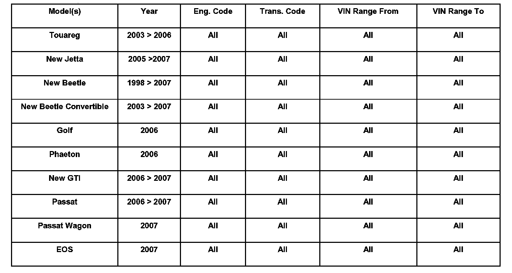
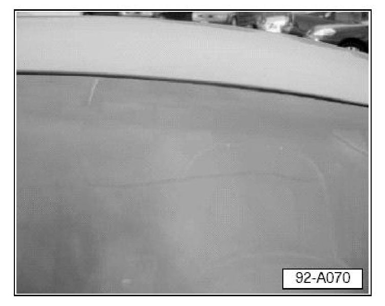

Wipers - Windshield Wipers Streak or Smear Windshield
92 06 04Jun 2, 2006
2012329/1
Condition
Customer States Windshield Wipers, Streak or Smear

To avoid unnecessary replacement of wiper blades, a few potential causes such as, the condition / cleanliness of the windshield and wiper blades, should be checked first.
Technical Background
If addressed, the wiper performance is significantly improved, as is the longevity of the wiper blades.
Customer may complain that wipers are ineffective. Complaints may include that the wipers:
^ Streak or smear.
^ Do not clear across entire length of blade.
^ Chaffer or skip as wiper travels across windshield glass.
Production Solution
No production change required.
Service
The following items are to be corrected, if necessary, before replacing wiper blades:
Wipers Streak or Smear:

The most common causes for streaking wipers are:
^ Dirty windshield.
^ Dirty wiper blades.
^ Stone chips, cracks or scratches in the windshield.
BEFORE REPLACING THE WIPER BLADES:
^ Carefully inspect the windshield for any stone chips and scratches. Stone chips and scratches can affect the performance of the blade.
^ Stone chips and scratches caused by an outside influence CANNOT be claimed under warranty. Consult with the customer and schedule a repair or replacement of the windshield glass before replacing wiper blades.
^ Clean the windshield with a glass cleaner to make sure that the windshield is clear of all foreign objects.
^ Clean the wiper blades of any particles or residue using a clean, damp cloth DO NOT use any kind of cleaner on the wiper blades, if you need a liquid to clean use water.
Waxes, particularly those applied by car washes and industrial fallout from various sources, may leave a residue on the windshield and wipers which affects wiping efficiency.
TIP:
Explain cleaning procedure of wiper blades and windshield glass to customer.
If after cleaning and inspecting components, the wiper blades still streak or smear, replace windshield wipers.
Warranty
^ The cleaning of the windows or the replacement of dirty wiper blades CANNOT be claimed under warranty.
^ Replacement components may be requested for submission to the Warranty Test Center and will be evaluated.
^ Claims for components not found to be defective or found to be serviceable may be denied.
^ It is the Dealership's responsibility to properly package parts requested by the Warranty Test Center to not create any additional damage during shipment.
^ Claims for improperly packaged parts that sustain extraneous damage may be denied.
Required Parts and Tools
No Special Tools required.
No Special Parts required. Always see ETKA for the latest part(s) information.